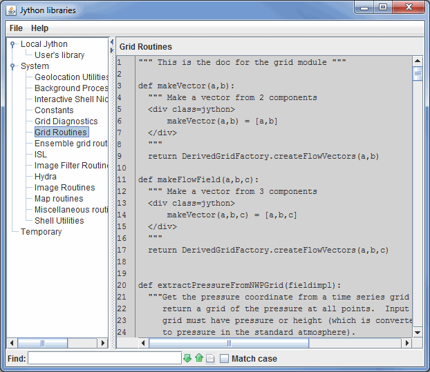

Jython Methods
McIDAS-V allows you to write your own Jython methods using the Jython Library
editor. From the main menu bar, select the Tools->Formulas->Jython
Library menu item in the Main Display window.

Image 1: Jython Libraries Window
The Jython Library window has a tree view on the left that shows the different
(categorized) library files available. The files that are listed under "Local
Jython" are those that can be edited. Any libraries added via a plugin will be listed under Local Jython. The naming of the items in the list will be based on the name of the plugin (e.g. From: VIIRS_Formulas1.5.jar). The System files should not be edited by the user, and you should contact the McIDAS Help Desk for assistance if you wish to modify them. On
the right is the edit panel for the selected file.
There is documentation available for the System Jython
Libraries.
The Jython libraries window includes syntax highlighting, which colors different parts of the text in different colors. For example, strings will be pink and comments specified with a pound symbol (#) will be green.
The Jython Library contains a search feature at the bottom of the window that will search for text in the currently viewed library.
 Image 2: Jython Library Search Menu
Image 2: Jython Library Search Menu
- Find - Searches for the text string.
 Find Next - Finds the next occurrence of the searched for text string.
Find Next - Finds the next occurrence of the searched for text string. Find Previous - Finds the previous occurrence of the searched for text string.
Find Previous - Finds the previous occurrence of the searched for text string. Highlight All - Highlights all occurrences of the text string. When all items are highlighted in the text, this button will change from white to yellow.
Highlight All - Highlights all occurrences of the text string. When all items are highlighted in the text, this button will change from white to yellow.- Match Case - Finds only items in the text that match the case of the entry in the Find field.
There are various keyboard shortcuts that can be used with this Find menu:
- CTRL/CMD+F - Moves the focus of the cursor from the library to the Find menu.
- ESC - Moves the focus of the cursor away from the Find menu and back to the library.
- CTRL/CMD+N - Searches the library for the next instance of the string of text being searched for.
- CTRL/CMD+P - Searches the library for the previous instance of the string of text being searched for.
Menus
The File menu has these unique items:
- New Jython Library - Opens a window prompting for the name of the library. This library will be listed under the Local Jython tree in the Jython Library window.
- Export to Plugin - Exports the full text of the currently opened library to a plugin .jar file. This allows for providing the plugin to other users and they will then have access to the function(s).
- Export Selected to Plugin - Exports any selected text in the currently opened library to a plugin .jar file. This allows for providing the plugin to other users and they will have access to the function(s). A use of this over Export to Plugin is if the library has multiple functions, but you are only interested in exporting one of them.
A. Jython is a Java implementation
of the Python language. It is used within McIDAS-V for data analysis.
Complex routines can be written in the McIDAS-V Jython editor and called
from the
McIDAS-V Formulas.
Q. How do I learn to write Jython?
A. There are a
number
of books available on the language as well as a number of web sites:
Q. How does Jython work with my data in McIDAS-V?
Q. Creating/Removing library files
A. To create a new file use the File->New
Jython Library... menu. To remove the currently displayed
library file use the File->Remove Library menu.
Q. Calling procedures from formulas
A. When creating a formula with
the
Formula Editor you can call any routines
you have defined in the Jython Library. Simply enter the procedure name
in the formula with appropriate arguments, if any. For example a formula
might be "convertCToF(atemp)". When evaluating the formula for display,
this will call the routine that you define in the Jython Library.
Q. Create a formula from my procedure
A. Right click on a procedure
definition within the McIDAS-V editor window and choose
Make
formula for .... This is a convenience that brings up the Formula
creation dialog with a call to that procedure.
As another convenience you can also right-click on the Formula: field of the Formula Editor to show the Insert
Procedure Call menu. This lists all of the currently defined
procedures in the other Jython libraries.
Q. Why do I see "TypeError: object is not callable" messages when scripting?
A. This error occurs when a user gives a variable the same name as a reserved keyword or function. For a list of reserved Jython functions, please see
Built-in Functions. Variable names should be unique.